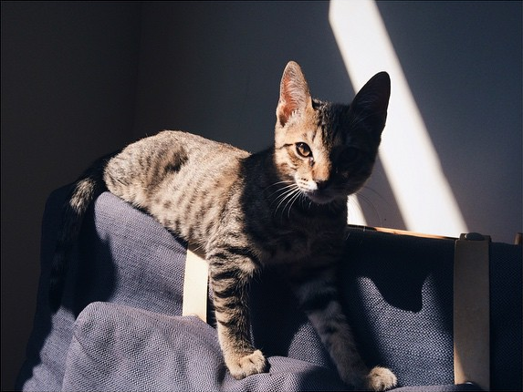

Git, el gato

Raza
Doméstico MexicanoColor
Gris AtigradoNacimiento
20 de Agosto,2014Descripción
Git el gato es un gato domestico mexicano, que desafortunadamente fue abandonado por su madre biologica. Fue rescatado por una joven quien lo adopto y cuida muy bien de el.
Disfruta subirse a los muebles y dejar su pelo en ellos
Galeria

